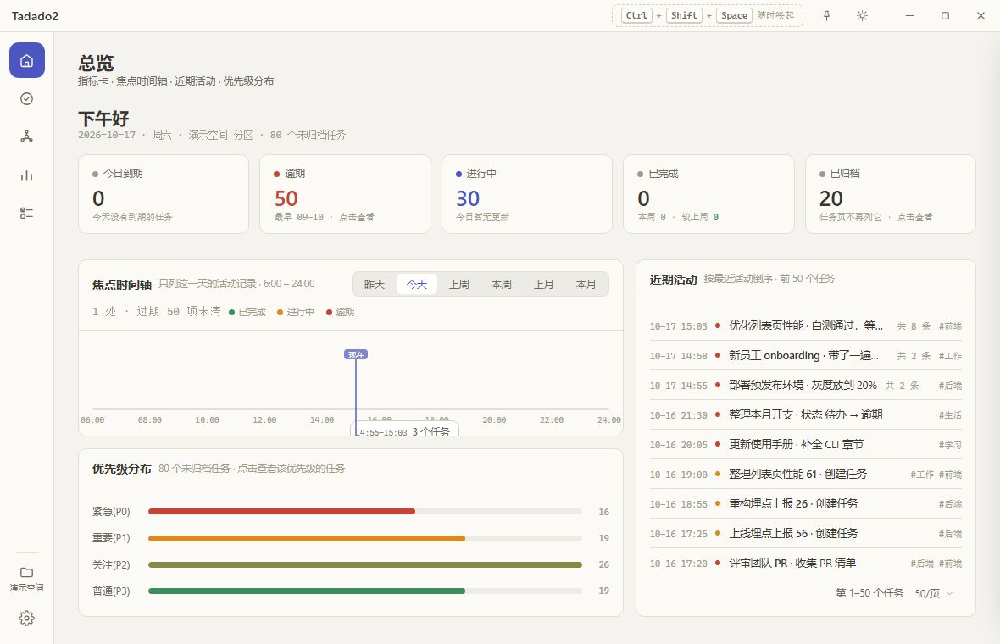
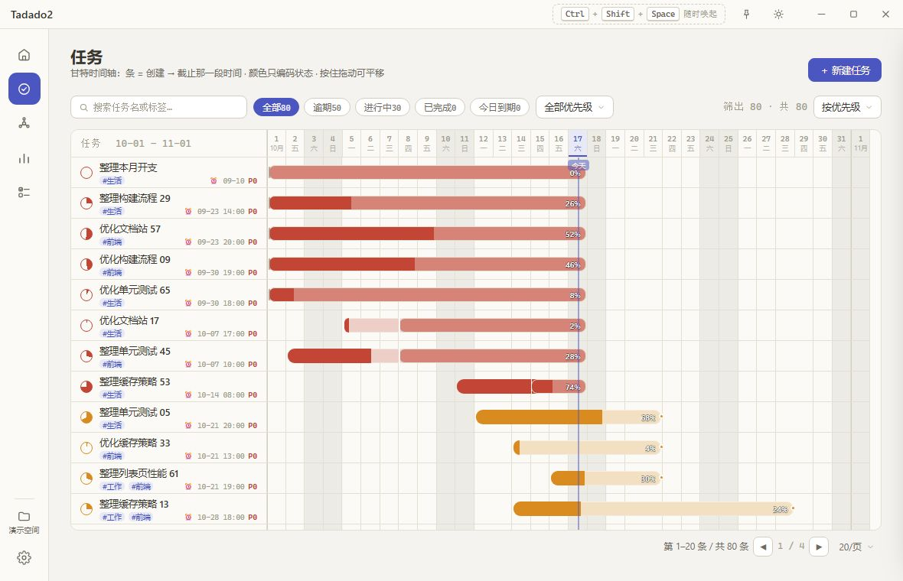
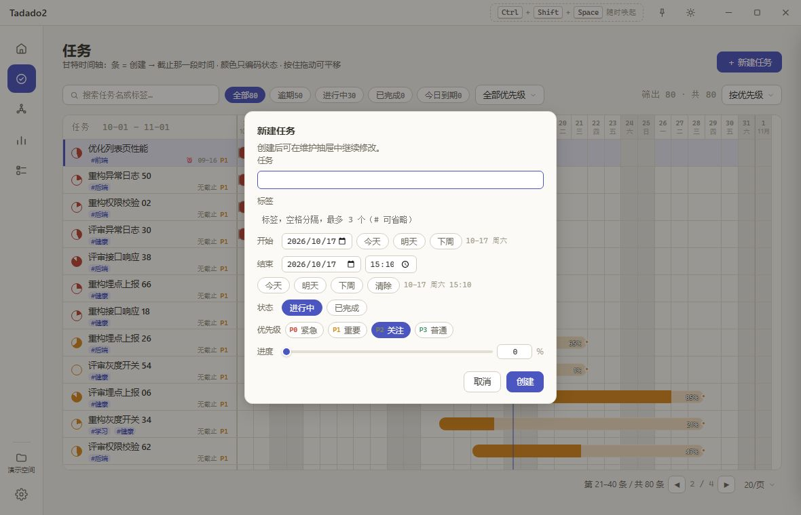
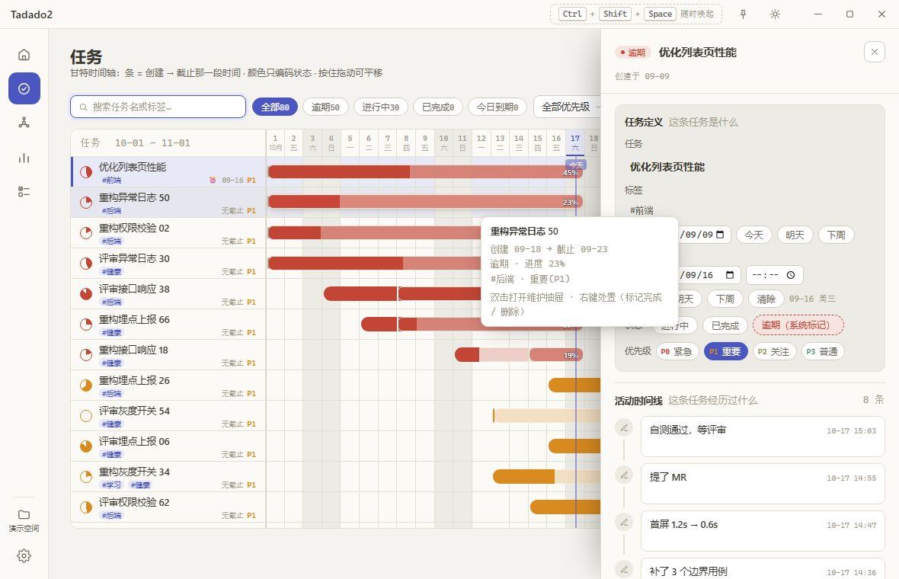
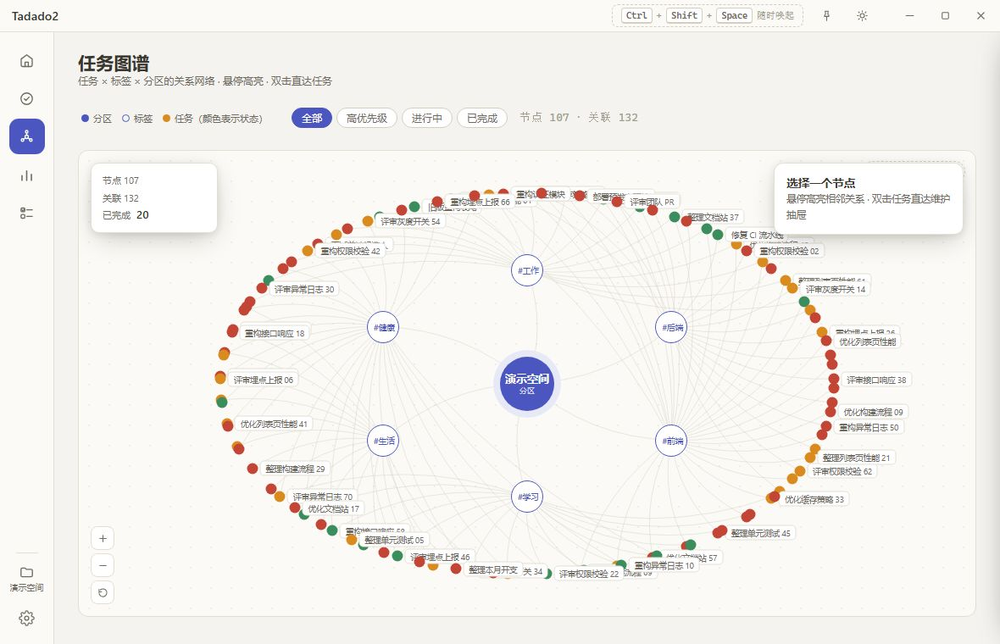
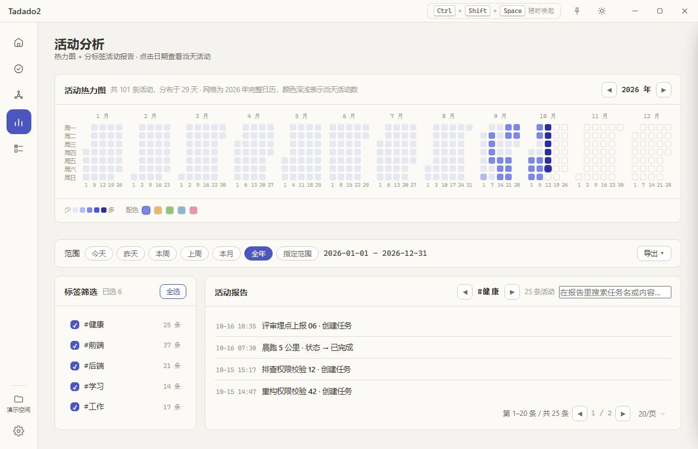
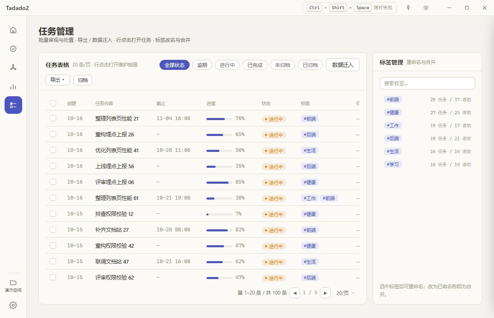
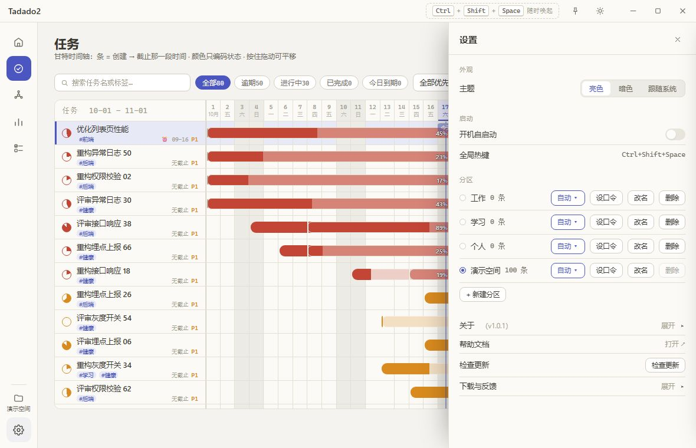

这是什么
Tadado2 是一个本地优先的桌面任务管理器：任务是一行字，过程是一条线。 任务、进展与时间线都留在你自己的机器上，没有账号、没有云端同步。
五个视图看同一批数据，只是形状不同：总览回答「现在最该做什么」， 任务把起止时间铺在一条时间轴上，任务图谱展示任务与标签、分区的关系， 活动分析回看一年里动过什么，任务管理负责批量处置、导出与迁入。
功能一览
- 五个视图：总览、任务、任务图谱、活动分析、任务管理
- 任务页是甘特时间轴（条 = 创建 → 截止，颜色只编码状态）；任务图谱把「任务 × 标签 × 分区」铺成关系网络
- 活动分析：整年热力图 + 分标签报告，可按当前范围导出 md / txt / xlsx
- 本地优先：单文件 SQLite，无账号、无云端同步
- 键盘优先：Ctrl+1–5 切页，Ctrl+Shift+Space 全局唤起
- 变更留痕：进度与优先级的改动、手写的进展都留在活动时间线

数据在哪里
所有任务、活动记录、分区与设置都写进一个 SQLite 文件。Windows 上的默认位置是：
%APPDATA%\com.tadado.app\tadado.data
把 %APPDATA% 粘到文件资源管理器地址栏回车，就能看到
com.tadado.app 文件夹。这个文件可以单独拷走、单独备份，卸载程序默认也不会删它。
纯浏览器预览（开发时用 vite preview 打开）没有 SQLite，数据放在浏览器的
localStorage 里，只用于预览界面。
安装、升级、卸载
两种形态
- 安装包（NSIS 或 MSI）：装进系统，带开始菜单与卸载入口，可以开机自启动。
- 便携版（zip 里一个
Tadado2.exe）：解压即可运行，不写安装记录。
两种形态读写的是同一个数据文件，换一种打开也能看到同样的任务。
升级
- 下载新版本的安装包。
- 运行安装包。检测到旧版本时会让你选：默认勾选「原地升级（保留任务与分区数据）」， 也可以改选「先卸载再安装」。
- 装完打开，任务、分区、口令与设置都还在。
卸载
从「设置 → 应用 → 已安装的应用」卸载即可。卸载页有一个「删除应用数据」选项，默认 不勾选；勾选后会再确认一次。想保留任务就别勾它。
Windows 的拦截提示
安装包没有购买代码签名证书，首次运行时 Windows SmartScreen 可能提示「已保护你的电脑」。 点「更多信息」→「仍要运行」即可。这是签名问题，不是安装包损坏。
系统要求
Windows 10 / 11（64 位），需要系统自带的 WebView2 运行时（Windows 11 自带；Windows 10 通常随 Edge 一起安装好了）。不需要 Python、Node 或任何额外运行库。
界面总览
窗口分三层：最上面是标题栏，左边是导航栏，右边是当前页面。设置与任务详情都是从右侧滑出的抽屉。
标题栏
- 按住空白处拖动窗口；双击标题栏最大化 / 还原。
- 图钉：让窗口浮在其他应用之上，再点一次取消。
- 太阳 / 月亮：在亮色与暗色之间切换（「跟随系统」在设置里选）。
- 最小化与最大化；右上角的 × 是最小化到托盘，不是退出。
导航栏
- 五个页面：总览、任务、任务图谱、活动分析、任务管理。
- 底部的文件夹按钮是分区切换器，按钮下面一行写着当前分区名。
- 再下面是齿轮：打开设置抽屉。
快捷键
| 按键 | 作用 |
|---|---|
| Ctrl+1 | 总览 |
| Ctrl+2 | 任务 |
| Ctrl+3 | 任务图谱 |
| Ctrl+4 | 活动分析 |
| Ctrl+5 | 任务管理 |
| Ctrl+Shift+Space | 全局唤起 / 收起主窗口（在任何应用里都生效） |
| Esc | 关闭抽屉、对话框、菜单或弹层 |
光标停在输入框里时，Ctrl+数字 不会切页。
每个页面回答什么
| 页面 | 回答的问题 | 典型用法 |
|---|---|---|
| 总览 | 现在最该做什么？今天动过什么？ | 早上花一分钟看指标卡与焦点时间轴 |
| 任务 | 这段时间里，每条任务压在哪个区间？ | 拖动时间窗看排期，右键快速处置 |
| 任务图谱 | 这条任务和哪些标签、分区有关？ | 顺着标签找一批相关任务 |
| 活动分析 | 过去一年我都在做什么？ | 按标签回看，导出成报告 |
| 任务管理 | 怎么批量改、导出或迁入？ | 批量归档、导出表格、迁入旧数据 |
总览页
一句话定位：先看结论，再决定进哪一页。五张指标卡是入口，时间轴与近期活动是「最近发生了什么」。
指标卡
左起五张，每张都可以点，点完会跳到对应的列表或筛选：
- 今日到期：今天截止的任务数，副标写其中几项排了具体时刻。
- 逾期：已过截止时间还没完成，副标写最早那条的日期。
- 进行中：当前状态为进行中的任务，副标写今天更新过几个。
- 已完成：已完成任务，副标写本周完成数与相比上周的增减。
- 已归档：已收进归档的任务，点击跳到任务管理页的「已归档」。
指标卡上的数字就是点开后的筛出总数，两处不会对不上。
焦点时间轴
用来回答「今天（或这一周、这一个月）动过什么」。右上角有六档：昨天、今天、上周、本周、 上月、本月。
- 昨天 / 今天：6:00–24:00 的时刻轴。气泡是该任务当天最后一次活动的时刻与标题，绿色 +N 表示当天一共记了几条；点气泡打开维护抽屉。
- 相邻不到 30 分钟、且数量够多的气泡会合成一簇，显示时间段与「N 个任务」，点开看明细。
- 轴上有一条随真实时钟移动的「现在」标记。
- 上周 / 本周 / 上月 / 本月：换成按天的色条，条的范围就是任务的起止区间。
- 轴下的「时刻在轴外」列出没排具体时刻的到期任务；「已过期未完成」最多列 3 条，点「等 N 个」看全部。
近期活动
一个任务一行，按最近活动倒序，最多 50 个任务。每行显示时间、状态色点、任务标题与最新一条 进展、共几条记录、标签。点行打开维护抽屉；底部分页器可改成每页 20 / 30 / 50 / 100 个任务。
优先级分布
四行：紧急(P0)、重要(P1)、关注(P2)、普通(P3)，每行一条横向长度 + 计数。点某一行会跳到 任务页并按该优先级筛选。
任务页
一句话定位：把一段时间里的任务排期摊开。横轴是日期，一行一条任务，条的位置就是它的起止区间。
怎么读这张甘特图
- 时间窗固定 32 天，默认从「今天往前 16 天」开始。
- 条 = 创建日 → 截止日那一段时间，不是「从现在到截止」。
- 颜色只编码状态：逾期红、进行中橙、已完成绿。
- 条够宽时，条内直接写进度百分比；窄条只看得到颜色。
- 行首那枚进度饼：扇形大小就是进度，颜色是状态；0% 进行中显示 ▶，100% 显示 ✓。
- 逾期任务的条会向右延伸到今天，并在真实截止日留一道竖记 —— 一眼看出「原本该在哪天结束」。
- 悬停条上会出小卡：起止日期、状态与进度、标签与优先级、以及双击 / 右键的用法。

筛选与排序
| 控件 | 选项 | 说明 |
|---|---|---|
| 搜索框 | 搜索任务名或标签 | 与其它筛选叠加 |
| 状态 | 全部 / 逾期 / 进行中 / 已完成 | 每枚带条数；今日到期是独立开关，再点一次取消 |
| 优先级 | 全部优先级 / 紧急(P0) / 重要(P1) / 关注(P2) / 普通(P3) | 单选 |
| 排序 | 按截止日期 / 按优先级 / 按进度 / 按创建时间 | 默认按优先级 |
计数行写「筛出 N · 共 M」；筛完没有结果时会提示可切换状态或清空搜索。
平移与回到今天
- 在表格上按住左键横向拖动，时间窗按天平移；移动不超过 5px 仍算点击。
- 今天不在窗口里时，表头右侧的日期区间变成可点的「↺ 回到今天」，点一下恢复默认窗口。
常用操作
| 操作 | 结果 |
|---|---|
| 单击一行 | 选中该行 |
| 双击一行 | 打开维护抽屉；对同一条再双击一次收起 |
| 右键一行 | 打开维护抽屉 / 标记完成（未完成时）或 标记未完成 / 删除任务 |
| 页头「＋ 新建任务」 | 打新建对话框；任务名、标签、结束时间三项必填 |
新建对话框里，状态默认「进行中」，开始默认今天，结束默认今天当前时刻；创建完可以继续在维护抽屉里改。

维护抽屉
一句话定位：一条任务的全部信息与它的历史。在任务页双击、总览的时间轴 / 近期活动、图谱节点、 活动记录或任务管理的表格行都能打开它。
任务定义（改动即时保存）
抽屉上半部分是字段，改完就写盘，没有底部的「保存」按钮：
| 字段 | 说明 |
|---|---|
| 任务 | 标题 |
| 标签 | 空格分隔，# 可省略 |
| 开始 | 只能选日期；不可清除 |
| 结束 | 日期 + 时分；可清除，缺省为今天当前时刻 |
| 状态 | 进行中 / 已完成；逾期由系统按截止时间标记，不可手选 |
| 优先级 | 紧急(P0) / 重要(P1) / 关注(P2) / 普通(P3) |
| 进度 | 滑杆 + 数字框；拖满 100% 会同时标记为已完成 |
活动时间线
- 按时间正序排列（最早的在上），每条带图标、内容与时间。
- 进度记录显示
from% → to%，优先级记录显示旧 → 新。 - 状态变化不单独占一行：当前状态在标题的徽标上；数据里仍完整保留，用于完成日与统计。
- 手写进展被修改过会标「已编辑」。
- 只有手写进展与进度记录能编辑或删除，按钮是「编辑」「删除」；编辑时 Esc 只取消这一条，不关抽屉。
- 底部输入框「记录一条进展（回车保存）」：Enter 或右侧发送按钮保存。
- 只拖了进度、没写说明时，会提示先写一句再一起记下 —— 否则时间线上只会多一条没有上下文的数字。
Markdown 源（规范数据源）
最下面是可折叠的「Markdown 源」。它展示这条任务的单行写法，输入时实时预览解析结果：
- [ ] 标题 #标签 ⏰09-21 14:30 :: 40%
- 这里改完不会立即写入任务，要点「按 md 更新任务」。
- 「还原」把输入框恢复成当前任务的样子。
- 状态不参与 md（方括号里的勾不采纳）；进度写满 100% 会按统一口径标记为已完成。
关闭方式
右上角的 ×、Esc、点抽屉外的空白处、切到别的页面，都会收起抽屉。

任务图谱
一句话定位：换个形状看同一批数据。分区在中心，标签在中间，任务在最外层 —— 回答「这条任务 和什么有关」。
节点与连线
- 分区：实心强调色圆，名字下挂一个「分区」小签。
- 标签：强调色描边空心圆；没有标签的任务会归到虚线框的「未分类」。
- 任务：实心圆，颜色表示状态；只有紧急(P0)与重要(P1)常驻名字，其余悬停才显示。
- 分区连到它的每条标签；任务连到它拥有的每一条标签（多标签任务只画一个节点、连多条边）。
操作
| 操作 | 结果 |
|---|---|
| 悬停 | 高亮自身与相邻节点 / 边，其余置灰 |
| 单击节点 | 右上详情卡：分区看任务与标签数；标签看任务胶囊；任务看状态、进度、起止日期与标签 |
| 双击任务节点 | 直接打开维护抽屉 |
| 点标签下的任务胶囊 / 详情卡按钮 | 打开维护抽屉 |
| 点画布空白 | 收起详情卡并清除高亮 |
| 拖动节点 | 只移动被拖的那一个，布局不会整体重排 |
| 放大 / 缩小 / 复位布局 | 0.6–1.8 倍缩放；复位后提示「布局已复位」 |
工具行的四枚筛选 chip：全部、高优先级、进行中、已完成；右上角还显示当前分区与节点、关联、完成数统计。

活动分析
一句话定位：回看。整年热力图告诉你哪几天动得多，分标签报告告诉你那些动作用在了什么上。
活动热力图
- 一整年、12 个自然月，列 = 自然周（周一起），行 = 周一到周日。
- 年份用 ◀ / ▶ 翻；看别的年份时，点中间的年份可以回到今年。
- 每格悬停显示「日期 · 周X · N 条活动」；今天带强调色描边，未来的日期显示「还没到」。
- 点击某一天：下方活动报告只看那一天。再点一次范围按钮恢复。
- 右下角的配色选择器可以换热力图色阶；底部图例从「少」到「多」五级。
范围与标签
范围七档：今天、昨天、本周、上周、本月、全年、指定范围。选「指定范围」后出现两个日期框，中间是「至」。
左侧「标签筛选」卡每行 = 勾选框 + 标签 + 条数，卡头的「全选」可以一键全勾 / 全取消。活动报告与导出 都只按当前范围 × 勾选的标签计算。
活动报告
- 卡头用 ◀ / ▶ 切换标签，中间显示当前标签与记录数。
- 搜索框可以按任务名或活动内容过滤（占位「在报告里搜索任务名或内容…」）。
- 每条记录 = 时间 + 任务标题 · 活动内容；点击打开维护抽屉。
- 默认每页 20 条。
导出
右上角「导出 ▾」有三种格式，导出的都是当前范围与勾选标签下的活动：
| 格式 | 结构 |
|---|---|
| Markdown（.md） | 标签 → 任务 → 活动，三层文本，按时间升序 |
| 文本（.txt） | 与 md 同一结构，纯文本 |
| 表格（.xlsx） | 列：标签 / # / 任务 / 状态 / 时间 / 内容 |
没勾标签时会提示「先在左侧勾选标签」；该范围里没有活动会提示没有可导出的内容。

任务管理
一句话定位：逐条审视、批量处置、进出数据。这里也是唯一能看到「已归档」任务的地方。
筛选与列表
- 状态视图是一条单选：全部状态、逾期、进行中、已完成、未归档、已归档。状态与归档不能叠加筛选。
- 排序固定为创建时间倒序（同日期按 id），没有排序控件 —— 这一页要的是稳定顺序，不是另一种看法。
- 表格列：勾选框、创建、任务内容、截止、进度、状态、标签、归档。
- 点行打开维护抽屉；点标签胶囊会在右侧「标签管理」里选中该标签。
- 分页可选每页 20 / 30 / 50 / 100，默认 20。
批量处置
勾选任意行后，上方出现批量条：已选 N 项 + 标记完成 / 归档 / 取消归档 / 删除 / 取消选择。
- 「删除」是危险操作，会二次确认。
- 页头的「归档 / 取消归档」按钮作用于当前筛选下的全部任务（跨页），同样会先确认。
- 归档不是删除：任务仍在，只是从任务页收走，在「已归档」视图里还能找回来。
导出
「导出 ▾」导出当前筛选结果，格式同样是 Markdown / 文本 / 表格。文件名形如
tadado2-分区名-日期；xlsx 的列是 # / 创建 / 任务内容 / 截止 / 进度 / 状态 / 标签 / 归档。
数据迁入
- 点「数据迁入」，对话框标题下会写明导入到哪个分区。
- 点「选择文件…」选一个 Markdown 或文本文件。每行一条任务，写法与维护抽屉里的 md 源一致。
- 对话框当场解析并给出计数：共几条、几行没识别、几条同名重复、几条起止日期需要修正。
- 按需要选「跳过重复，导入 N 条」或「全部导入 N 条」。
标签管理
右侧「标签管理」卡可以搜索标签，每行显示「N 任务 / M 活动」。选中一个标签后可以改名或删除； 改成一个已存在的名字就是合并，合并后重复的标签会自动去重。没有单独的「合并」按钮，因为 「改成同名」本身就是最直白的合并操作。

分区与归档
一句话定位：分区是彼此独立的抽屉，归档是抽屉里收起来的那一层。切分区 = 换一整套任务与活动。
分区
- 内置四个：工作、学习、个人、演示空间。首次启动落在「演示空间」，那 100 条样例只在那里。
- rail 底部的文件夹按钮打开切换器：每项显示分区名、条数、有没有口令，当前项带勾。
- 切换后提示「已切换至分区「名称」」。Esc 关闭弹层。
- 在「设置 → 分区」可以新建、改名、删除；里面有任务的分区不能删，按钮会置灰并写明还剩几条。
- 分区有一个「默认」单选点：它决定启动时进哪个区，不影响你现在切到哪。
口令锁（隐私屏风）
每个分区可以单独设口令。切到设了口令的分区时，会盖上一层锁屏：卡片写着「分区已锁定」， 输入口令后「解锁」；口令错误会清空输入并重新聚焦。
每个分区还能设「空闲锁定」：关 / 5 分 / 10 分 / 30 分。到点自动锁当前分区。解锁状态只在本次运行有效， 重启后需要重新输入。
归档档位
每个分区单独设「完成后归档」：不归档、立即、7 天、30 天、90 天。
- 「立即」是延迟为 0 天，不是关掉功能；真正关掉是「不归档」。
- 新建分区的默认档位是「立即」。
- 归档后的任务从任务页消失，在任务管理页的「已归档」视图里；批量条与页头按钮都能「取消归档」。
这两项是分区行尾「自动 ▾」里的设置，展开才建控件；只要有一项不是默认值，按钮就会染色提示。
设置
齿轮按钮打开右侧设置抽屉。整页从上到下四组：外观、启动、分区、关于；切到别的页面会自动收起。
外观
主题三选一：亮色、暗色、跟随系统。标题栏的太阳 / 月亮按钮与这里是同一个设置。
启动
- 开机自启动：写入系统的启动项，开 / 关都立即生效。
- 全局热键：只读显示 Ctrl+Shift+Space。它是代码里的固定组合，不是可改项， 所以不摆成一个能点的开关。
分区
一个分区一行：默认单选点、名字、条数、锁标记，行尾是「自动 ▾」「设口令」「改名」「删除」。展开「自动 ▾」 才有「完成后归档」与「空闲锁定」。
关于
「关于」这一组固定四行，顺序不变：
| 行 | 作用 |
|---|---|
| 关于（v{{VERSION}}） | 组标题带版本号；点标题行展开 / 收起应用介绍 |
| 帮助文档 | 整行可点的常驻入口：用系统默认浏览器打开你正在读的这份文档 |
| 检查更新 | 两步：检查新版本 → 「下载并安装」；下载完应用退出并由安装器自动重启进新版 |
| 下载与反馈 | 有自己的展开 / 收起：阿里云盘(国内推荐)、GitHub Releases、公众号与仓库 |
「关于」的介绍块与「下载与反馈」是两个独立的折叠：展开一个不会带上另一个，各自记住上次的状态。 帮助文档入口永远可见，不跟着任何折叠块消失。
云盘按钮下面还有一行小字：「链接失效？换 GitHub Releases，或公众号 Pyvan 留言。」 云盘分享可能被平台取消，程序不探测它是否还有效（阿里云盘对失效分享同样返回正常页面， 内容全靠脚本渲染，客户端判断不了）。打不开时按这行小字换一条路即可。
检查更新怎么工作
- 只在你点击时联网，不做启动时的静默检查。
- 两步：第一次点「检查更新」只查有没有新版；查到后按钮变成「下载并安装」， 再点一次才下载 —— 什么时候占带宽、什么时候重启由你决定。
- 查询走这份程序自己的版本清单（GitHub 上的
latest.json）。检查失败 （网络不通、超时、清单不存在）统一显示「已是最新版本」，不端出一屏错误码。 - 下载时状态行显示百分比。下载完会启动安装程序：应用会退出，装完自动重新打开新版本。
- 更新包必须通过签名校验才会安装；校验不过不会改动你现在的版本。
- 下载失败时显示「更新失败 · 可手动下载」，「下载与反馈」会自动展开，可以从阿里云盘或 GitHub Releases 手动下载。
- 只有安装版能应用内更新；便携版请手动下载新包。

数据与备份
一句话定位：一个文件就是全部。备份 = 复制它，恢复 = 放回去。
备份
- 先从托盘菜单退出 Tadado2（右上角的 × 只是最小化到托盘）。
- 打开
%APPDATA%\com.tadado.app\。 - 把
tadado.data复制到别的位置，按日期命名，例如tadado-2026-10-17.data。
恢复
- 退出应用。
- 把备份文件改回
tadado.data，覆盖到同一目录。 - 重新打开。分区、任务、活动与设置都会回来。
Markdown 导入与导出
- 导出：任务管理页「导出 ▾」导出当前筛选结果；活动分析页导出的是活动报告。格式为 md / txt / xlsx。
- 导入：任务管理页「数据迁入」，一行一条任务，可先跳过重复再导入。
- 单条任务也能在维护抽屉底部的「Markdown 源」里直接改，点「按 md 更新任务」生效。
从 v0.x 迁移
旧版 PySide6 的任务不会被自动读取。做法是：在旧版里按分区导出 → 用仓库里的迁移工具转换成 「一行一条」的写法 → 在 Tadado2 里切到目标分区，用「数据迁入」导入。两边数据目录不同，装新版 不会影响旧库。
版本更新
本手册对应 v{{VERSION}}。下面是最近这次发布的要点，完整记录见仓库的更新日志。
本次更新（v1.0.4）
- 升级前卡在归档里的任务会回到任务页：启动时自动归位一次，并提示放回了几条；手动归档的 未完成任务不受影响。
- 活动时间线更干净：状态变更不再单独占一行（当前状态看标题徽标），总览「近期活动」同样 不再显示；完成时间与统计仍照常记录。
历史版本与完整改动：GitHub Releases； 更新日志：CHANGELOG.md。
常见问题
我的数据到底存在哪？
一个 SQLite 文件：%APPDATA%\com.tadado.app\tadado.data。没有云端副本，也没有隐藏的
第二份数据。把这个文件拷走就等于备份了全部任务、活动与设置。
升级会不会丢任务？
不会。数据文件在 %APPDATA% 里，安装包只覆盖程序本身。安装时默认选中的就是
「原地升级（保留任务与分区数据）」；卸载页的「删除应用数据」默认不勾选。
忘了分区口令怎么办？
口令只用于遮蔽，不加密数据。切到另一个分区，打开设置 → 分区，给忘了口令的那个分区重设一个 新口令即可 —— 改口令不校验旧口令。没有「找回」流程，因为它本来就不是一把密码锁。
检查更新为什么有时说「已是最新版本」？
检查只回答「有没有比当前版本更新的正式版」。网络失败、超时、GitHub 临时异常都说明不了 「有没有新版」，所以统一显示「已是最新版本」，而不是让你判断一串错误码。过一会儿再点一次即可。 它不会在启动时偷偷联网：只有你点了「检查更新」或「下载并安装」才会访问网络。
安装时提示「Windows 已保护你的电脑」？
安装包没有购买代码签名证书，SmartScreen 因此不认识它。点「更多信息」→「仍要运行」即可。 如果你更在意这一点，可以用便携版：解压后直接运行，不改动系统。
便携版和安装版的数据是共用的吗？
是。两者都读写 %APPDATA%\com.tadado.app\tadado.data，所以可以先用便携版试用，
再装安装版，任务都在。反过来说，如果想让两套数据完全分开，需要手动改数据目录，
当前版本不提供这个开关。
阿里云盘的下载链接打不开了？
云盘分享可能被平台取消，也可能只是临时抽风。先等一会儿重试；仍然打不开就去 GitHub Releases 下载， 或者在公众号「Pyvan」留言要一份新链接 —— 设置 → 关于 → 下载与反馈 里那行小字也写着这两条路。
程序不会替你去试探链接是否有效：阿里云盘对失效分享同样返回正常页面，内容全靠脚本渲染， 客户端拿不到可靠判据，硬做只会多一次联网和一次误报。